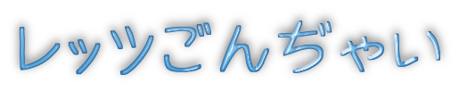

ごんぢゃいとは？
かつて少しだけ住んでいた香港で、あるキャラクターに出会い癒されたのを機に
「いつか私も！」という夢を描いたものの、手芸やモノづくりへの興味も経験も乏しく
浮かんだイメージといえば「まるに手足」だけ・・・
しかし！その日からマイキャラクターを具現化すべく材料探しと試行錯誤に明け暮れ、
幾多の屍を乗り越え（！？）構想に10年、製作に2年半、命名に半年・・・
そしてやっと完成したのがこの「ごんぢゃい」です。
「クスッと笑ってちょっといっぷく」していただけたら幸いです。
仲間たち共々、どうぞ宜しくお願い申し上げます。
tableサンプル
| 見出しが必要な場合はここに入れます | |
|---|---|
 |
ごんぢゃい説明文 |
 |
あんにゅいーぬ説明文 |
 |
だぼまろ説明文 |